20个Loop设计模型
20 个 loop design pattern · X 长文完整中文解读
Rahul (@sairahul1) 2026/07/01 的 X 长文 "20 Loop Design Patterns Every AI Engineer Should Know" 91.3K 浏览。原文按 5 类（Quality / Memory / Planning / Exploration / System Optimization）拆 20 个 loop design pattern，每个配原文插图、代码、真实用例。本文按 10 章完整翻译：先讲 agent 和 loop 的核心区别（cap 01-02），再按 5 类逐个拆 20 个 pattern（cap 03-07），最后讲 20 个 pattern 背后的统一结构（cap 08-10）。14 张原文配图、10 段代码、20 个 pattern 完整保留。
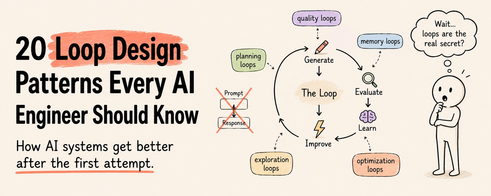
Rahul · 20 Loop Design Patterns Every AI Engineer Should Know · 2026/07/01 · 原 X 文章链接
多数 AI 工程师知道怎么搭一个 agent。
但很少有人知道怎么搭一个第一次尝试之后还能持续变好的系统。
这个差距价值六位数。
本文按 10 章拆解这篇 91.3K 浏览的 X 长文。cap 01-02 讲 agent 和 loop 的本质区别；cap 03-07 按 5 类把 20 个 pattern 逐个翻完（Quality 5 个 + Memory 5 个 + Planning 5 个 + Exploration 3 个 + System Optimization 2 个）；cap 08-10 讲 20 个 pattern 背后的统一结构和最后的 shift。原文所有配图、代码、用例都保留。
An agent is a worker
多数 AI 工程师知道怎么搭一个 agent。但很少有人知道怎么搭一个第一次尝试之后还能持续变好的系统。
这个差距价值六位数。
区别是：
Agent 是工人。
Loop 是让工人变强的东西。
今天生产环境里最强的 AI 系统，不是单次模型调用。它们是 loop——Generate → Evaluate → Learn → Improve，一次又一次，直到输出真的够好。
下面是 20 个在生产环境 AI 系统里反复出现的 loop design pattern。收藏这篇文章。你会用上它们。
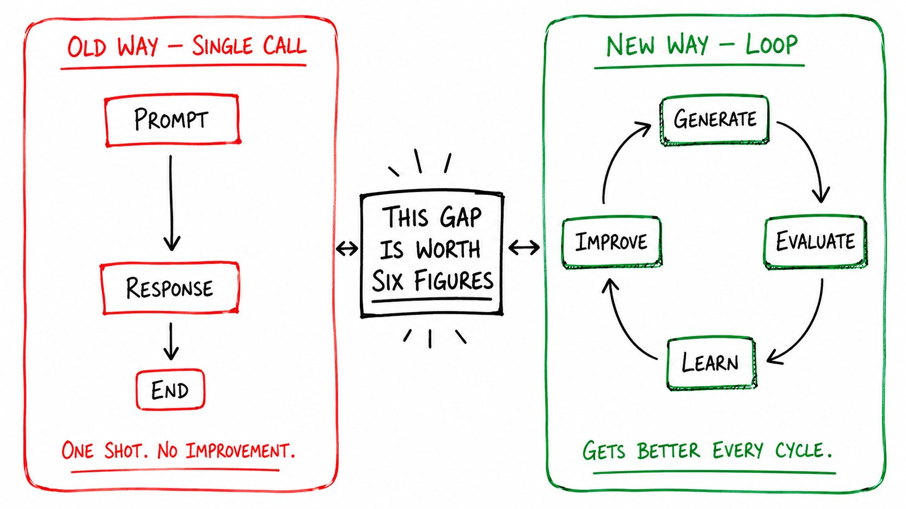
Agents vs Loops
原文用一个对比把整篇文章的支点摆出来：
旧方法：Prompt → Response → Done.
新方法：Generate → Critique → Rewrite → Score → Retry → Remember → Improve.
一个是工厂工人，做一次活就下班。
另一个是工厂工人，研究每一次错误，改写工作手册，每一班效率提升 3%。
现在 production 里跑得最好的 AI 团队，不是写更好的 prompt——他们在搭更好的 loop。
Quality Improvement Loops
第一类的共同目标：在输出离开系统之前，把它做得更好。不是事后补救，是流水线内部就修了。
Pattern 1 · Generate → Critique → Rewrite
AI 工程里最重要的 loop。
生成输出。批评家审阅。生成器根据反馈重写。重复，直到达到质量门槛。
不是单个模型。两个角色。一条流水线。
[Generator] → draft [Critic] → "paragraph 3 is vague. missing evidence. tone is off." [Generator] → rewrite based on critique [Critic] → "better. but conclusion still weak." [Generator] → final rewrite
用途：写作、code review、报告、战略文档、销售邮件。
洞察：负责生成的模型不是自己输出的最佳评判者。独立的批评家每次都能找到生成器漏掉的东西。
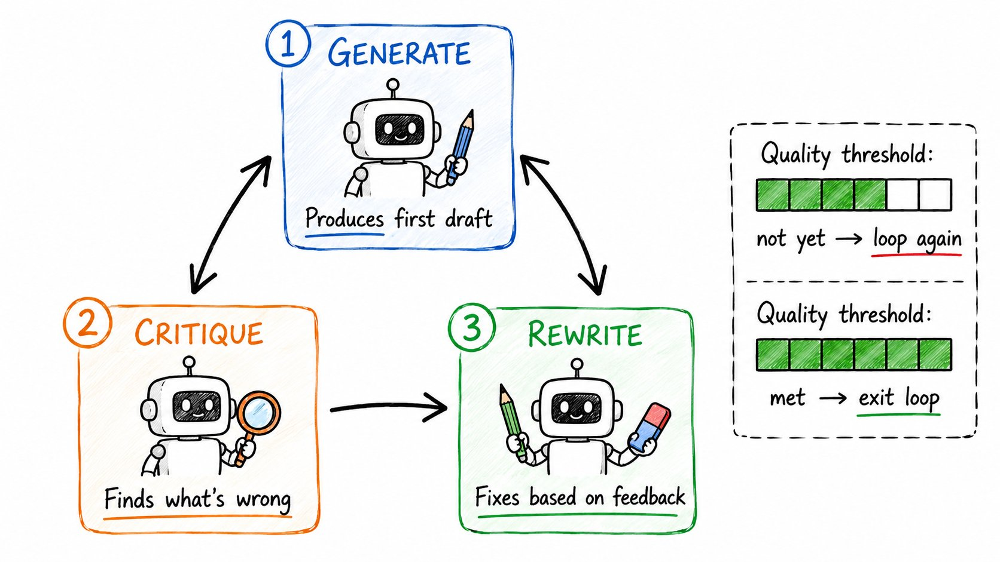
Pattern 2 · Score-and-Retry Loop
生成。评分。低于门槛就重试。
简单。强大。被低估。
score = evaluate(output)
while score < threshold:
output = generate(prompt)
score = evaluate(output)
attempts += 1
if attempts > max_retries:
return best_so_far
最适合质量可度量的场景——抽取准确率、格式合规、事实正确性、线索打分。
生成器不知道它正在被评分。评分器知道。这种分离就是 pattern。
Pattern 3 · Multi-Critic Loop
一个批评家有盲区。用四个。
- Correctness critic —— is it factually accurate?
- Style critic —— is it clear and well-written?
- Safety critic —— is it appropriate and safe?
- Domain critic —— does it meet specialist standards?
每个独立评估。最终输出必须同时满足这四个才能离开。
用途：医疗 AI、法律文档审阅、金融分析、监管内容。
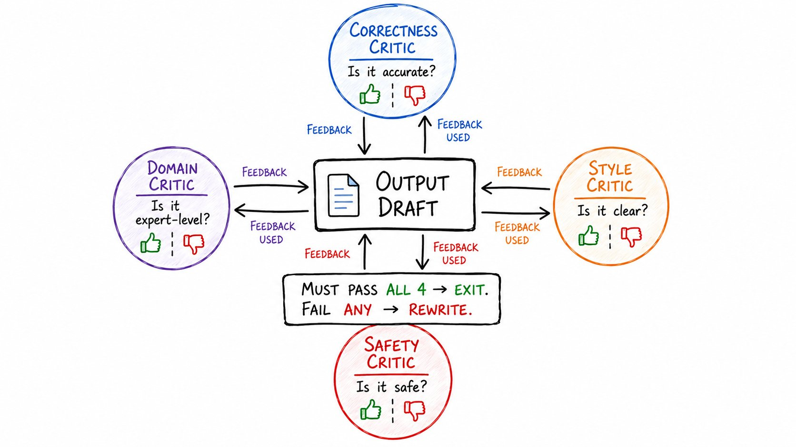
Pattern 4 · Adversarial Critique Loop
批评家唯一的工作是打破答案。不是改进。是打破。
对抗性批评家会问的问题：
- What assumptions fail here?
- What evidence is missing?
- What would a skeptic say?
- Where is this confidently wrong?
然后生成器辩护或重写。最好的答案扛过这次攻击。
用途：研究综述、投资论点审阅、战略规划、风险分析。
Pattern 5 · Judge Ensemble Loop
一个评审给出的分数有噪声。五个评审把噪声平均掉。
让同一个输出跑多个评审。汇总分数。只有高一致性的输出能往下走。
适用场景：单模型评估不可靠、风险高、边缘 case 重要。
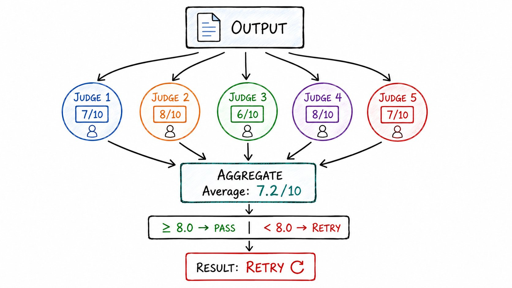
Memory Loops
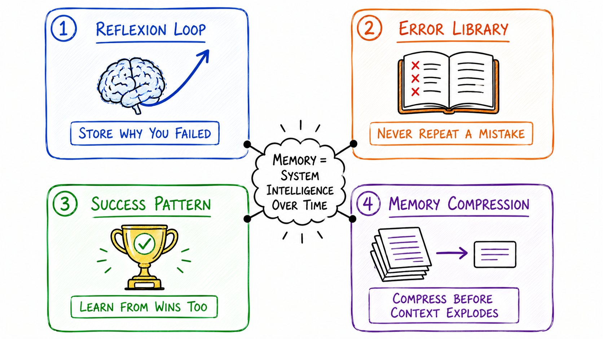
Pattern 6 · Reflexion Loop
现有最重要的自我改进 pattern。
Agent 失败。Agent 分析为什么失败。Agent 存下教训。Agent 带着这个教训重试。
每次迭代：比上一次更聪明。
attempt 1: fails reflection: "I assumed X but X was wrong. Next time verify X first." attempt 2: incorporates lesson → partial success reflection: "Better. But I skipped Y. Add Y check." attempt 3: succeeds
"失败一次的系统"和"只失败一次的系统"，区别就在这里。
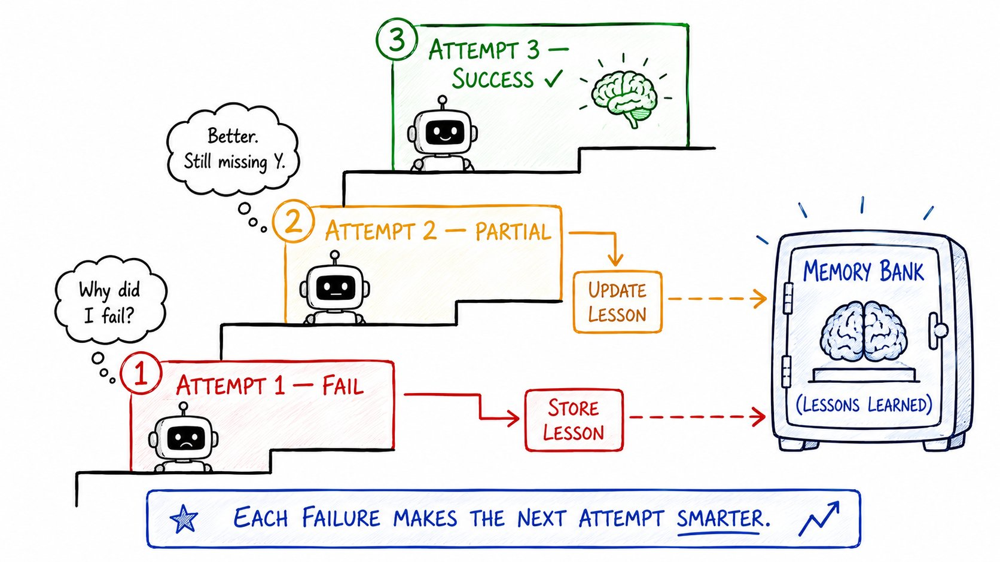
Pattern 7 · Memory Update Loop
每次任务之后，存三件事：
- What decision was made
- What the outcome was
- What would be done differently
后续运行继承这些知识。
第 6 个月的系统已经不是第 1 个月的那个。它已经读过自己 6 个月的历史。
Pattern 8 · Error Library Loop
存下每一次失败。
错答案。坏输出。失败执行。边缘 case。
在开始新任务之前：
- 先搜错误库
- 如果有相似的失败 → 在动手之前就用上已知的修法
系统不再犯同样的错两次。
生产环境 AI 中最被低估的 pattern。
Pattern 9 · Success Pattern Loop
大多数工程师只存失败。也存成功。
任务做得好的时候：
- 存下方法
- 存下上下文
- 存下让它 work 的原因
面对相似任务时调用成功模式。
从赢里学。不只是从错里学。
Pattern 10 · Memory Compression Loop
记忆永远增长。没有上限的记忆是用不了的记忆。
累积 N 条之后：压缩。
很多具体记忆 → 压缩成更少的高层抽象。
Before compression: "Failed on task A because of X" "Failed on task B because of X" "Failed on task C because of X" After compression: "Pattern: X causes failures. Always check X first."
上下文保持可管理。模式保持可访问。系统保持快速。
Planning Loops
Pattern 11 · Plan → Execute → Replan
AI agent 设计里最常见的错误：把 plan 当成固定的。
Plan 一撞到现实就碎。
这个 pattern：Create plan → execute step → observe outcome → update plan → continue
不是 waterfall。是 spiral。每一圈让方法更紧。
适用场景：环境变化、任务有依赖、长期目标。
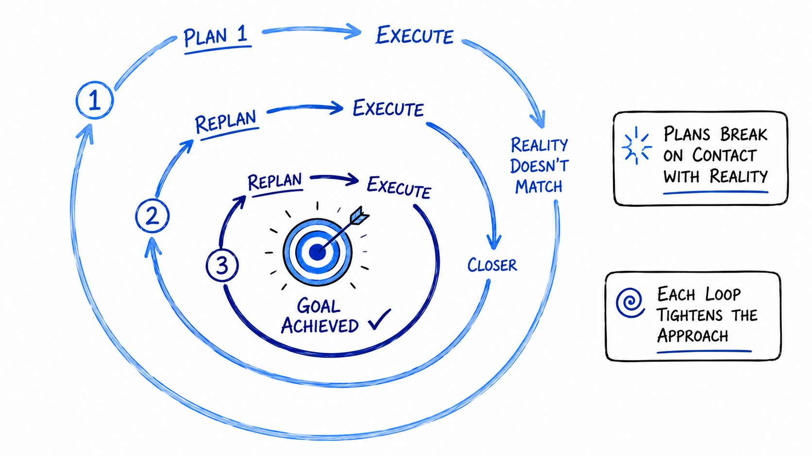
/plan 模式就是这个 loop 的简化版——先出 plan，跑一步，看结果，改 plan。复杂 task 必开，不要让 agent 一次写到结尾。
Pattern 12 · Dynamic Workflow Loop
大多数流水线是固定的。Step 1 → Step 2 → Step 3。永远。
动态工作流根据结果改变。
- 如果输出 A → 跑分支 X
- 如果输出 B → 跑分支 Y
- 如果输出 C → 直接跳到 step 5
流水线在 runtime 自己决定自己的形状。
用途：多文档研究、客服路由、自适应内容流水线。
Pattern 13 · Goal Decomposition Loop
大目标进来。系统拆成子目标。每个子目标拆成任务。每个任务拆成步骤。
拆到每个单元小到可以一次调用完成。
Goal: "Write a comprehensive competitive analysis" ↓ Subgoal 1: "Identify top 5 competitors" Subgoal 2: "Analyze each competitor's product" Subgoal 3: "Compare pricing models" Subgoal 4: "Identify gaps" ↓ Each subgoal → tasks → individual model calls
这个 loop 一直拆到系统能行动。
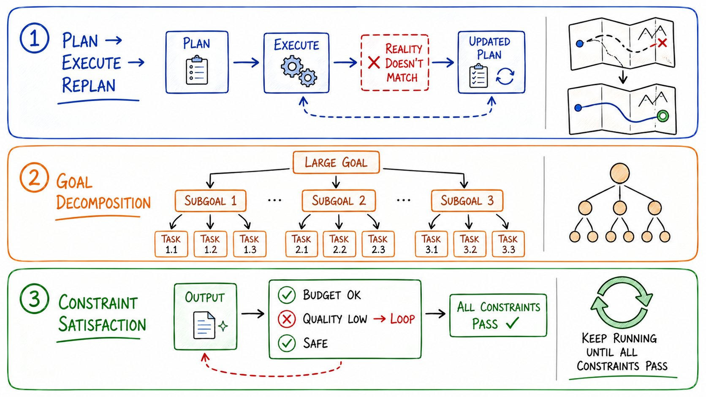
Pattern 14 · Progress Evaluation Loop
每 N 步：停下来问。"我们是不是真的更接近目标了？"
- 如果是：继续当前策略
- 如果不是：换策略、换工具、换 plan
系统监控自己的进度。不是盲目执行。
用途：长跑研究 agent、多天自主任务、debug agent。
Pattern 15 · Constraint Satisfaction Loop
一直跑到所有约束都满足。
while not all_constraints_satisfied(output):
output = improve(output, unsatisfied_constraints)
constraints = [
budget_under_limit,
quality_above_threshold,
latency_under_200ms,
tone_matches_brand,
no_hallucinations
]
在生产系统里非常常见。在每一条业务规则通过之前，输出不算完成。
Exploration Loops
Pattern 16 · Branch-and-Explore Loop
不要只押一条路。同时探索几条。
paths = [
generate(approach="conservative"),
generate(approach="aggressive"),
generate(approach="creative")
]
scores = [evaluate(p) for p in paths]
best = paths[scores.index(max(scores))]
比较结果。选最好的分支。丢掉其他。
用途：内容变体、架构决策、debug 多个假设、A/B 生成。
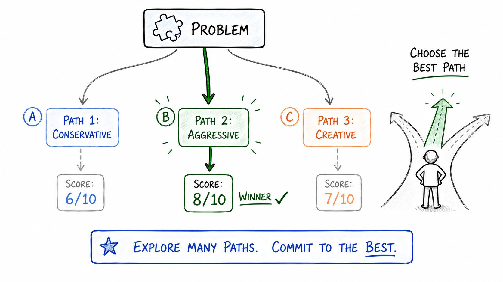
Pattern 17 · Tree Search Loop
Branch-and-Explore 只往下走一层。Tree Search 想走多深走多深。
展开最有希望的节点。剪掉最弱的。一直找到解。
root → [A, B, C] A → [A1, A2] # A looks promising, expand it B → prune # B is weak, stop here A1 → [A1a, A1b] A1a → solution ✓
用途：复杂推理链、多步规划、code debug、研究综述。
计算贵，但能找到单次调用找不到的解。
Pattern 18 · Debate Loop
两个 agent。一个议题。相对立场。
Agent A 主张答案，Agent B 反对。
每轮挑战假设、要求证据、暴露弱逻辑。
最终答案从分歧中产生。不是从一致中产生。
对抗压力找到单 agent 自信答案漏掉的东西。
用途：投资决策、战略规划、风险评估、研究批判。
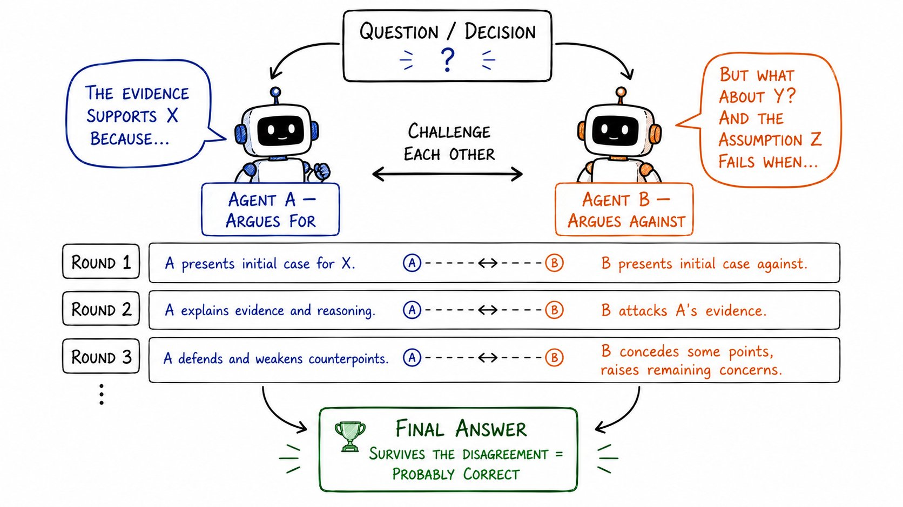
/plan 后接 red team 就是这个套路。
System Optimization Loops
Pattern 19 · Prompt Optimization Loop
大多数工程师写一次 prompt 就再不动了。Prompt 优化 loop 改掉这点。
这个系统：
- 在测试集上跑 prompt
- 给每个输出打分
- 找到 prompt 在哪失败
- 改写 prompt 修这些失败
- 重跑重打分
Prompt 自动变好。没人碰它。
current_prompt = "Summarize this document."
for iteration in range(max_iterations):
outputs = [run(current_prompt, doc) for doc in test_set]
scores = [evaluate(o) for o in outputs]
avg_score = mean(scores)
if avg_score >= target:
break
failures = [o for o, s in zip(outputs, scores) if s < threshold]
current_prompt = improve_prompt(current_prompt, failures)
# Prompt rewrites itself based on where it fails
用途：生产流水线、自动化内容系统、分类任务。
生产 AI 里最好的 prompt 不是人写的。是进化出来的。
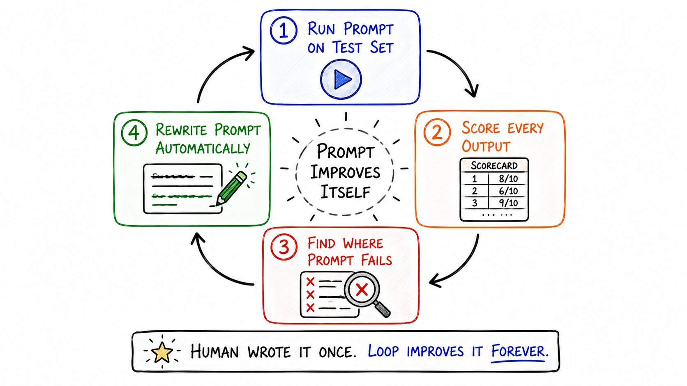
Pattern 20 · Workflow Optimization Loop
这是有趣的地方。Loop 在优化 loop 本身。
系统度量自己的表现：
- latency —— 每一步耗时多少？
- cost —— 每次调用多少 token？
- quality —— 每一阶段的输出分数是多少？
然后它修改自己的工作流。
太慢？把两步并行。太贵？在质量允许的地方用小模型替换 GPT-4 调用。质量在掉？在最终输出前加一个 critic。
metrics = measure_workflow(outputs, latency, cost)
if metrics.latency > target_latency:
workflow = parallelize(slow_steps)
if metrics.cost > budget:
workflow = replace_with_cheaper_model(high_cost_steps)
if metrics.quality < threshold:
workflow = add_critic_before(final_output_step)
这是真正自改进系统开始的地方。
不只是输出在变好。是系统在重新设计自己。
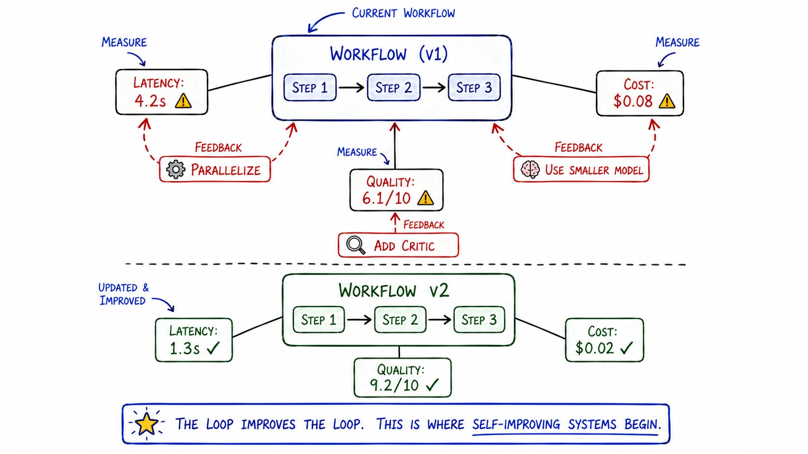
The pattern behind all 20 patterns
上面每一个 loop 共享一个结构：
Act → Observe → Evaluate → Adjust
这就是全部配方。
输出从来不是第一次就定稿。输出是起点。
Loop 把起点变成可上生产的东西。
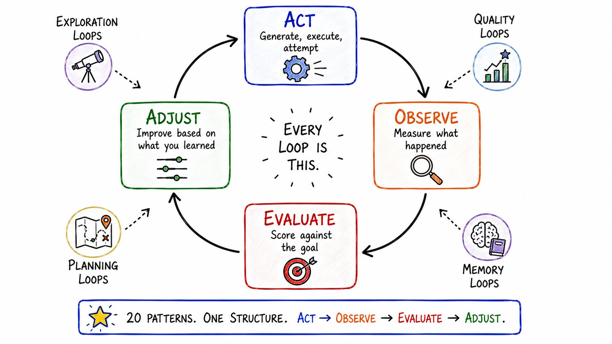
The full map
- Category 1 — Quality Loops (Make output better before it leaves)
→ 1. Generate → Critique → Rewrite · 2. Score-and-Retry · 3. Multi-Critic · 4. Adversarial Critique · 5. Judge Ensemble - Category 2 — Memory Loops (Learn from what happened)
→ 6. Reflexion · 7. Memory Update · 8. Error Library · 9. Success Pattern · 10. Memory Compression - Category 3 — Planning Loops (Adapt when reality changes)
→ 11. Plan → Execute → Replan · 12. Dynamic Workflow · 13. Goal Decomposition · 14. Progress Evaluation · 15. Constraint Satisfaction - Category 4 — Exploration Loops (Find best answer by trying many paths)
→ 16. Branch-and-Explore · 17. Tree Search · 18. Debate - Category 5 — System Optimization Loops (The loop improves the loop)
→ 19. Prompt Optimization · 20. Workflow Optimization
Most engineers think agents are the future.
Agent 只是工人。
Loop 才是让工人变强的东西。
AI 圈当下最大的转变不是更好的模型。是把：
Prompt → Response
变成：
Generate → Evaluate → Learn → Improve
掌握 loop 设计的团队不会去写更好的 prompt。他们会搭部署后每天都在变好的系统,不用人动。
SOURCES & CREDITS
引用与原文出处
-
ORIGINAL ARTICLE
20 Loop Design Patterns Every AI Engineer Should Know
作者：Rahul (@sairahul1) · Founder of nichetraffickit.com & theaibuilders.co
发布：2026/07/01 09:56 · X 平台 · 91.3K 浏览
原文链接：https://x.com/sairahul1/status/2072258045460226373 - AUTHOR · X https://x.com/sairahul1
-
RELATED · MEDIUM LONG-FORM
20 AI Agent Design Patterns — Organized as a Stack, Not a Menu · kumaran srinivasan
同一主题的深度技术版（14 分钟）· 含完整 weather-agent codebase · 4 层栈视角
链接：https://medium.com/@kumaran.isk/20-ai-agent-design-patterns-organized-as-a-stack-not-a-menu-8e0df0ee99c3 - INTERPRETATION 本文为解读版本，按中文阅读习惯重排。原文中所有英文段落、代码、配图均保留原貌；中文部分为意译，便于理解。如需引用请以原文为准。
20 个 loop design pattern，14 张原文配图，10 段代码，5 类结构，全文中文解读。可截图保存作为长期参考。
An agent is a worker. A loop is what makes the worker improve.
From Prompt → Response to Generate → Evaluate → Learn → Improve.
读完了。下一步：从 20 个 pattern 里挑 1 个，本周就用起来。